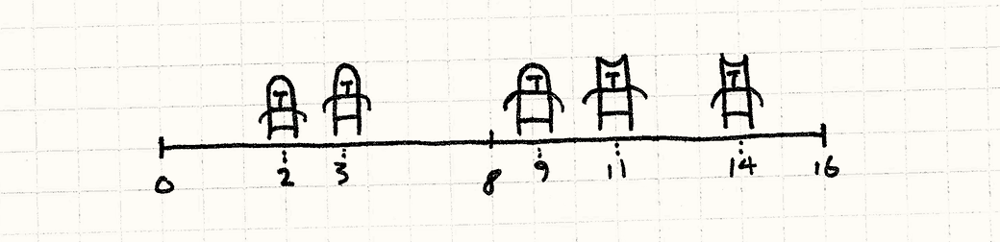
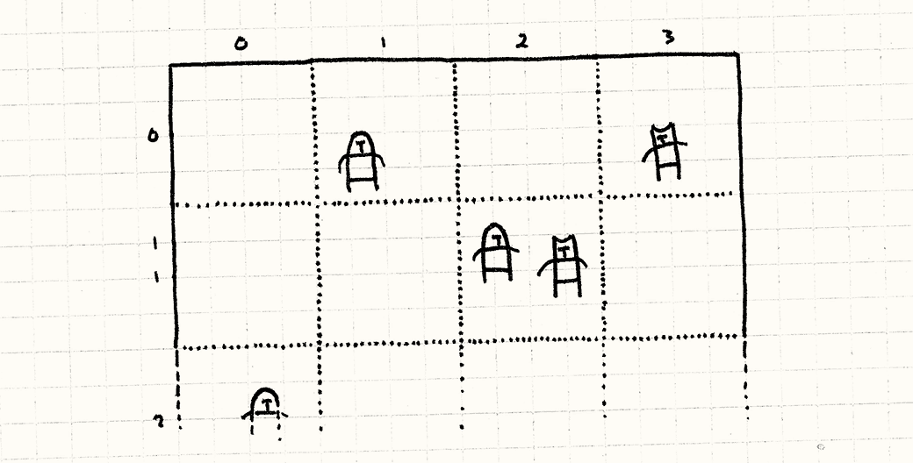
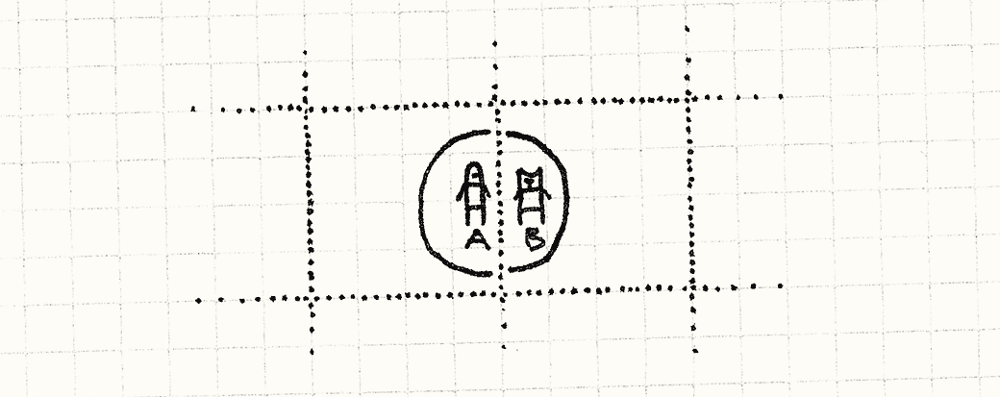
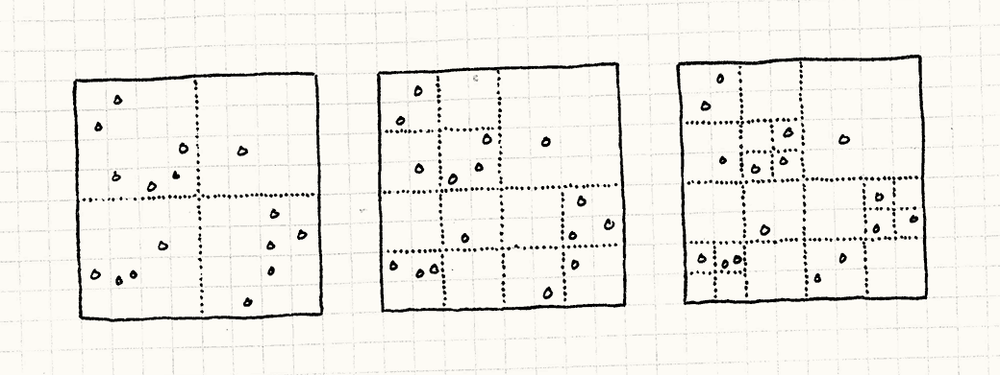

空间分区
游戏设计模式Optimization Patterns
Intent
意图
Efficiently locate objects by storing them in a data structure organized by their positions.
将对象根据它们的位置存储在数据结构中，来有效的定位对象。
Motivation
动机
Games let us visit other worlds, but those worlds typically aren’t so different from our own. They often share the same basic physics and tangibility of our universe. This is why they can feel real despite being crafted of mere bits and pixels.
游戏让我们的拜访其他世界，但这些世界通常和我们的没有什么不同。 它们通常有和我们宇宙同样的基础物理和感知系统。 这就是我们为什么会认为这些由比特和像素构建的东西是真实的。
One bit of fake reality that we’ll focus on here is location. Game worlds have a sense of space, and objects are somewhere in that space. This manifests itself in a bunch of ways. The obvious one is physics — objects move, collide, and interact — but there are other examples. The audio engine may take into account where sound sources are relative to the player so that distant sounds are quieter. Online chat may be restricted to nearby players.
我们这里注意的假事实是位置。游戏世界有空间的感觉，对象都在空间的某处。 它用很多种方式证明这点。最明显的是物理——对象移动，碰撞，交互——但是还有其他方式。 音频引擎也许会根据声源和玩家的距离来确定，越远的声音越小。 在线交流也许局限在较近的玩家之间。
This means your game engine often needs to answer to the question, “What objects are near this location?” If it has to answer this enough times each frame, it can start to be a performance bottleneck.
这意味着游戏引擎通常需要回答这个问题，“哪些对象在这个位置周围？” 如果每帧都需要回答这个问题，这就会变成性能瓶颈。
Units on the field of battle
在战场上的单位
Say we’re making a real-time strategy game. Opposing armies with hundreds of units will clash together on the field of battle. Warriors need to know which nearby enemy to swing their blades at. The naïve way to handle this is by looking at every pair of units and seeing how close they are to each other:
假设我们在做实时战略游戏。双方成百上千的单位在战场上撞在一起。 战士需要挥舞刀锋向最近的那个敌人砍去。 最简单的处理方法是检查每对单位，然后看看它们互相之间有多么近：
void handleMelee(Unit* units[], int numUnits) { for (int a = 0; a < numUnits - 1; a++) { for (int b = a + 1; b < numUnits; b++) { if (units[a]->position() == units[b]->position()) { handleAttack(units[a], units[b]); } } } }
Here we have a doubly nested loop where each loop is walking all of the units on the battlefield. That means the number of pairwise tests we have to perform each frame increases with the square of the number of units. Each additional unit we add has to be compared to all of the previous ones. With a large number of units, that can spiral out of control.
现在有了双重内嵌循环，每个循环都会遍历战场上的所有单位。 这就是意味着每帧进行的测试对数会随着单位数量的平方增长。 每个附加单位都需要和所有之前的相比较。 如果有大量单位，这就完全失控了。
Drawing battle lines
描绘战线
The problem we’re running into is that there’s no underlying order to the array of units. To find a unit near some location, we have to walk the entire array. Now, imagine we simplify our game a bit. Instead of a 2D battlefield, imagine it’s a 1D battleline.
我们这里碰到的问题是没有指明数组中潜藏的对象顺序。 为了在某个位置附近找到单位，我们需要遍历整个数组。 现在，我们简化一下游戏。 不使用2D的战场，想象这是一个1D的战线。

In that case, we could make things easier on ourselves by sorting the array of units by their positions on the battleline. Once we do that, we can use something like a binary search to find nearby units without having to scan the entire array.
在这种情况下，我们可以通过根据他们在战线上的位置排序数组元素来简化问题。 一旦我们那样做，我们可以使用像二分查找之类的东西找到最近的对象而不必扫描整个数组。
The lesson is pretty obvious: if we store our objects in a data structure organized by their locations, we can find them much more quickly. This pattern is about applying that idea to spaces that have more than one dimension.
这里的经验很明显：如果我们根据位置存储组织数据结构中的对象，就可以更快的找到它们。 这个模式是关于将这个思路应用到超过一个维度上。
The Pattern
模式
For a set of objects, each has a position in space. Store them in a spatial data structure that organizes the objects by their positions. This data structure lets you efficiently query for objects at or near a location. When an object’s position changes, update the spatial data structure so that it can continue to find the object.
对于一系列对象，每个都有空间上的位置。 将它们存储在根据位置组织对象的空间数据结构中，让你有效查询在某处或者附近的对象。 当对象的位置改变时，更新空间数据结构，这样它可以继续找到对象。
When to Use It
何时使用
This is a common pattern for storing both live, moving game objects and also the static art and geometry of the game world. Sophisticated games often have multiple spatial partitions for different kinds of content.
这是存储活跃的，移动的游戏对象的常用模式，也可用于静态美术和世界地理。 复杂的游戏中，不同的内容有不同的空间划分。
The basic requirements for this pattern are that you have a set of objects that each have some kind of position and that you are doing enough queries to find objects by location that your performance is suffering.
这个模式的基本需求是你有一系列有位置的对象，你做了太多的通过位置寻找对象的查询，导致性能下降。
Keep in Mind
记住
Spatial partitions exist to knock an O(n) or O(n²) operation down to something more manageable. The more objects you have, the more valuable that becomes. Conversely, if your n is small enough, it may not be worth the bother.
空间划分的存在是为了将O(n)或者O(n²)的操作降到更加可控的数量级。 你拥有的对象越多，这就越重要。相反的，如果n足够小，也许不需要担心这个。
Since this pattern involves organizing objects by their positions, objects that change position are harder to deal with. You’ll have to reorganize the data structure to keep track of an object at a new location, and that adds code complexity and spends CPU cycles. Make sure the trade-off is worth it.
由于这个模式包含了通过位置组织对象，可以改变位置的对象更难处理。 你需要重新组织数据结构来追踪在新位置的对象，这添加了更多的复杂性并消耗CPU循环。 保证交换是值得的。
A spatial partition also uses additional memory for its bookkeeping data structures. Like many optimizations, it trades memory for speed. If you’re shorter on memory than you are on clock cycles, that may be a losing proposition.
空间划分也会因为记录划分的数据结构而使用附加的内存。 就像很多优化一样，它用内存换速度。如果比起时钟周期，内存更加短缺，这就是个失败的提议。
Sample Code
示例代码
The nature of patterns is that they vary — each implementation will be a bit different, and spatial partitions are no exception. Unlike other patterns, though, many of these variations are well-documented. Academia likes publishing papers that prove performance gains. Since I only care about the concept behind the pattern, I’m going to show you the simplest spatial partition: a fixed grid.
模式自然变化——每种实现都略有不同，空间划分也不例外。 不像其他的模式，它的变化都很好的被记录下来。 学术界发表文章证明其性能优势。 由于我只关注模式背后的观念，我会给你展示最简单的划分：固定网格。
A sheet of graph paper
一张网格纸
Imagine the entire field of battle. Now, superimpose a grid of fixed-size squares onto it like a sheet of graph paper. Instead of storing our units in a single array, we put them in the cells of this grid. Each cell stores the list of units whose positions are within that cell’s boundary.
想象整个战场。现在，叠加一张固定大小的网格方块在上面，就好像一张网格纸。 不是在单独的数组中存储我们的对象，我们将它们存到网格的格子中。 每个格子存储一列单位，它们的位置在格子的边界内部。

When we handle combat, we only consider units within the same cell. Instead of comparing each unit in the game with every other unit, we’ve partitioned the battlefield into a bunch of smaller mini-battlefields, each with many fewer units.
当我们处理战斗时，我们只需考虑在同一格子中的单位。 不是将每个游戏中的单位与其他所有单位比较，我们将战场划分为多个小战场，每个都有更少的单位。
A grid of linked units
一网格链接单位
OK, let’s get coding. First, some prep work. Here’s our basic Unit class:
好了，让我们编码把。首先，一些准备工作。这是我们的基础Unit类。
class Unit { friend class Grid; public: Unit(Grid* grid, double x, double y) : grid_(grid), x_(x), y_(y) {} void move(double x, double y); private: double x_, y_; Grid* grid_; };
Each unit has a position (in 2D) and a pointer to the Grid that it lives on.
We make Grid a friend class because, as we’ll see, when a unit’s position
changes, it has to do an intricate dance with the grid to make sure everything
is updated correctly.
每个单位都有位置（2D表示），以及一个指针指向它存在的Grid。
我们让Grid成为一个friend类，因为，就像将要看到的，当单位的位置改变时，它需要和网格做复杂的交互，以确保任何事情都正确的更新了。
Here’s a sketch of the grid:
这里是网格的表示：
class Grid { public: Grid() { // Clear the grid. for (int x = 0; x < NUM_CELLS; x++) { for (int y = 0; y < NUM_CELLS; y++) { cells_[x][y] = NULL; } } } static const int NUM_CELLS = 10; static const int CELL_SIZE = 20; private: Unit* cells_[NUM_CELLS][NUM_CELLS]; };
Note that each cell is just a pointer to a unit. Next,
we’ll extend Unit with next and prev pointers:
注意每个格子是一个指向单位的指针。
下面我们扩展Unit，增加next和prev指针：
class Unit { // Previous code... private: Unit* prev_; Unit* next_; };
This lets us organize units into a doubly linked list instead of an array.
这让我们将对象组织为双向链表，而不是数组。

Each cell in the grid points to the first unit in the list of units within that cell, and each unit has pointers to the units before it and after it in the list. We’ll see why soon.
每个网格中的指针都指向网格中的元素列表的第一个，每个对象都有个指针指向它前面的对象，以及另一个指针指向它后面的对象。我们等会会知道为什么。
Entering the field of battle
进入战场
The first thing we need to do is make sure new units are actually placed into
the grid when they are created. We’ll make Unit handle this in its
constructor:
我们需要做的第一件事是保证新单位创建时被放置到了网格中。
我们让Unit在它的构建器中处理这个：
Unit::Unit(Grid* grid, double x, double y) : grid_(grid), x_(x), y_(y), prev_(NULL), next_(NULL) { grid_->add(this); }
This add() method is defined like so:
add()方法像这样定义：
void Grid::add(Unit* unit) { // Determine which grid cell it's in. int cellX = (int)(unit->x_ / Grid::CELL_SIZE); int cellY = (int)(unit->y_ / Grid::CELL_SIZE); // Add to the front of list for the cell it's in. unit->prev_ = NULL; unit->next_ = cells_[cellX][cellY]; cells_[cellX][cellY] = unit; if (unit->next_ != NULL) { unit->next_->prev_ = unit; } }
It’s a little finicky like linked list code always is, but the basic idea is pretty simple. We find the cell that the unit is sitting in and then add it to the front of that list. If there is already a list of units there, we link it in after the new unit.
除了链表通常有的繁琐，基本思路是非常简单的。 我们找到单位所在的网格，然后将它添加到列表前部。 如果那已经有一个列表单位了，我们把它链接到新的后面。
A clash of swords
刀剑碰撞
Once all of the units are nestled in their cells, we can let them start hacking at each other. With this new grid, the main method for handling combat looks like this:
一旦所有的单位都安定在他们的网格中，我们可以让它们开始互相交互。 使用这个新网格，处理战斗的主要方法看上去是这样的：
void Grid::handleMelee() { for (int x = 0; x < NUM_CELLS; x++) { for (int y = 0; y < NUM_CELLS; y++) { handleCell(cells_[x][y]); } } }
It walks each cell and then calls handleCell() on it. As you can see, we
really have partitioned the battlefield into little isolated skirmishes. Each
cell then handles its combat like so:
它遍历每个网格，然后在它上面调用handleCell()。
就像你看到的那样，我们真的需要将战场分割为分离的小冲突。
每个网格之后像这样处理它的战斗：
void Grid::handleCell(Unit* unit) { while (unit != NULL) { Unit* other = unit->next_; while (other != NULL) { if (unit->x_ == other->x_ && unit->y_ == other->y_) { handleAttack(unit, other); } other = other->next_; } unit = unit->next_; } }
Aside from the pointer shenanigans to deal with walking a linked list, note that this is exactly like our original naïve method for handling combat. It compares each pair of units to see if they’re in the same position.
除了遍历链表的指针把戏，注意它和我们原先处理战斗的原始方法完全一样。 它对比每对单位，看看它们是否在同一位置。
The only difference is that we no longer have to compare all of the units in the battle to each other — just the ones close enough to be in the same cell. That’s the heart of the optimization.
不同之处是，我们不必再互相比较战场上所有的单位——只与那些近在一个格子中的相比较。 这就是优化的核心。
Charging forward
加油向前
We’ve solved our performance problem, but we’ve created a new problem in its stead. Units are now stuck in their cells. If we move a unit past the boundary of the cell that contains it, units in the cell won’t see it anymore, but neither will anyone else. Our battlefield is a little too partitioned.
我们解决了我们的性能问题，但是我们创建了新问题。 单位现在陷在它的格子中。 如果将单位移出了包含它的格子，格子中的单位就再也看不到它了，但其他单位也看不到它。 我们的战场有点过度划分了。
To fix that, we’ll need to do a little work each time a unit moves. If it
crosses a cell’s boundary lines, we need to remove it from that cell and add it
to the new one. First, we’ll give Unit a method for changing its position:
为了解决那个，我们需要每次单位移动时都做些工作。
如果它跨越了格子的边界，我们需要将它从原来的格子删除，添加到新的格子中。
首先，我们给Unit一个方法来改变它的位置：
void Unit::move(double x, double y) { grid_->move(this, x, y); }
Presumably, this gets called by the AI code for computer-controlled units and by the user input code for the player’s units. All it does is hand off control to the grid, which then does:
可推测的是，它会被AI代码调用控制电脑的单位，也会被玩家输入代码调用来控制玩家的单位。 它做的只是交换格子的控制权，之后：
void Grid::move(Unit* unit, double x, double y) { // See which cell it was in. int oldCellX = (int)(unit->x_ / Grid::CELL_SIZE); int oldCellY = (int)(unit->y_ / Grid::CELL_SIZE); // See which cell it's moving to. int cellX = (int)(x / Grid::CELL_SIZE); int cellY = (int)(y / Grid::CELL_SIZE); unit->x_ = x; unit->y_ = y; // If it didn't change cells, we're done. if (oldCellX == cellX && oldCellY == cellY) return; // Unlink it from the list of its old cell. if (unit->prev_ != NULL) { unit->prev_->next_ = unit->next_; } if (unit->next_ != NULL) { unit->next_->prev_ = unit->prev_; } // If it's the head of a list, remove it. if (cells_[oldCellX][oldCellY] == unit) { cells_[oldCellX][oldCellY] = unit->next_; } // Add it back to the grid at its new cell. add(unit); }
That’s a mouthful of code, but it’s pretty straightforward. The first bit checks to see if we’ve crossed a cell boundary at all. If not, all we need to do is update the unit’s position and we’re done.
这是一大块代码，但它很直观。 第一位检查我们是否穿越了格子的边界。 如果没有，需要做的所有事情就是更新单位的位置，搞定。
If the unit has left its current cell, we remove it from that cell’s linked list and then add it back to the grid. Like with adding a new unit, that will insert the unit in the linked list for its new cell.
如果单位已经离开了现在的格子，我们从格子的链表中移除它，然后再添加到网格中。 就像添加一个新单位，它会插入新格子的链表。
This is why we’re using a doubly linked list — we can very quickly add and remove units from lists by setting a few pointers. With lots of units moving around each frame, that can be important.
这就是为什么我们使用双向链表——我们可以通过设置一些指针飞快的添加和删除单位。 每帧都有很多单位移动时，这就很重要了。
At arm’s length
一臂之长
This seems pretty simple, but I have cheated in one way. In the example I’ve been showing, units only interact when they have the exact same position. That’s true for checkers and chess, but less true for more realistic games. Those usually have attack distances to take into account.
这看起来很简单，但我们某种程度上作弊了。 在我展示的例子中，单位在它们有完全相同的位置时才交互。 这对于西洋棋和国际象棋是真的，但是对于更加实际的游戏就不那么准确了。 这通常需要将攻击距离引入考虑。
This pattern still works fine. Instead of just checking for an exact location match, we’ll do something more like:
这个模式仍然可以好好工作，与检查同一位置匹配相反，我们做的事情更接近于：
if (distance(unit, other) < ATTACK_DISTANCE) { handleAttack(unit, other); }
When range gets involved, there’s a corner case we need to consider: units in different cells may still be close enough to interact.
当范围被牵扯进来，需要考虑一个边界情况： 在不同网格的单位也许仍然足够接近，可以相互交互。

Here, B is within A’s attack radius even through their centerpoints are in
different cells. To handle this, we will need to compare units not only in the
same cell, but in neighboring cells too. To do this, first we’ll split the inner
loop out of handleCell():
这里，B在A的攻击半径内，哪怕它们的中心点在不同的网格。
为了处理这个，我们不仅需要比较同一网格的单位，同时需要比较邻近网格。
为了达到这点，首先我们让内层循环摆脱handleCell()：
void Grid::handleUnit(Unit* unit, Unit* other) { while (other != NULL) { if (distance(unit, other) < ATTACK_DISTANCE) { handleAttack(unit, other); } other = other->next_; } }
Now we have a function that will take a single unit and a list of other units
and see if there are any hits. Then we’ll make handleCell() use that:
现在有函数接受一个单位和一列表的其他单位看看有没有碰撞。
然后我们让handleCell()使用它：
void Grid::handleCell(int x, int y) { Unit* unit = cells_[x][y]; while (unit != NULL) { // Handle other units in this cell. handleUnit(unit, unit->next_); unit = unit->next_; } }
Note that we now also pass in the coordinates of the cell, not just its unit list. Right now, this doesn’t do anything differently from the previous example, but we’ll expand it slightly:
注意我们同样传入了网格的坐标，而不仅仅是对象列表。 现在，这也许和前面的例子没有什么区别，但是我们会稍微扩展它：
void Grid::handleCell(int x, int y) { Unit* unit = cells_[x][y]; while (unit != NULL) { // Handle other units in this cell. handleUnit(unit, unit->next_); // Also try the neighboring cells. if (x > 0 && y > 0) handleUnit(unit, cells_[x - 1][y - 1]); if (x > 0) handleUnit(unit, cells_[x - 1][y]); if (y > 0) handleUnit(unit, cells_[x][y - 1]); if (x > 0 && y < NUM_CELLS - 1) { handleUnit(unit, cells_[x - 1][y + 1]); } unit = unit->next_; } }
Those additional handleUnit() calls look for hits between the current unit and
units in four of the eight neighboring cells. If
any unit in those neighboring cells is close enough to the edge to be within the
unit’s attack radius, it will find the hit.
这些新加的handleCell()调用在现在的单位和周围八个邻近格子中的四个寻找是否有任何碰撞。
如果任何邻近格子的单位离边缘近到单位的攻击半径内，就找到碰撞了。
We only look at half of the neighbors for the same reason that the inner loop starts after the current unit — to avoid comparing each pair of units twice. Consider what would happen if we did check all eight neighboring cells.
我们只查询一半的近邻，基于内层循环从当前单位之后的单位开始同样原因——避免将每对单位比较两次。考虑如果我们检查全部八个近邻格子会发生什么。
Let’s say we have two units in adjacent cells close enough to hit each other, like the previous example. Here’s what would happen if we looked at all eight cells surrounding each unit:
假设我们有两个在邻近格子的单位近到可以互相攻击，就像前一个例子。 这是我们检查全部8个格子会发生的事情：
-
When finding hits for A, we would look at its neighbor on the right and find B. So we’d register an attack between A and B.
-
当找谁打了A时，我们检查它的右边找到了B。所以注册一次A和B之间的攻击。
-
Then, when finding hits for B, we would look at its neighbor on the left and find A. So we’d register a second attack between A and B.
-
然后，当找谁打了B时，我们检查它的左边找到了A。所以注册第二次A和B之间的攻击。
Only looking at half of the neighboring cells fixes that. Which half we look at doesn’t matter at all.
只检查一半的近邻格子修复了这点。检查哪一半无关紧要。
There’s another corner case we may need to consider too. Here, we’re assuming the maximum attack distance is smaller than a cell. If we have small cells and large attack distances, we may need to scan a bunch of neighboring cells several rows out.
我们还需要考虑另外的边界情况。 这里，我们假设最大攻击距离小于一个格子。 如果我们有小格子和长攻击距离，我们也许需要扫描几行外的近邻格子。
Design Decisions
设计决策
There’s a relatively short list of well-defined spatial partitioning data structures, and one option would be to go through them one at a time here. Instead, I tried to organize this by their essential characteristics. My hope is that once you do learn about quadtrees and binary space partitions (BSPs) and the like, this will help you understand how and why they work and why you might choose one over the other.
好的位置划分数据结构相对较少，说明方法之一是一一列举。 但是，我试图从它们的本质特性来组织。 我期望一旦你学会了四叉树和二分空间查找（BSPs）和其他类似的，就可以帮助你理解它们是如何工作，为什么工作，以帮你选择。
Is the partition hierarchical or flat?
划分是层次的还是平面的？
Our grid example partitioned space into a single flat set of cells. In contrast, hierarchical spatial partitions divide the space into just a couple of regions. Then, if one of these regions still contains many objects, it’s subdivided. This process continues recursively until every region has fewer than some maximum number of objects in it.
我们的网格例子将空间划分成平面格子的集合。 相反，层次空间划分将空间分成几个区域。 然后，如果其中一个区域还包含多个对象，再划分它。 这个过程递归进行，直到每个区域都有少于最大数量的对象在其中。
-
If it’s a flat partition:
-
如果是平面划分：
-
It’s simpler. Flat data structures are easier to reason about and simpler to implement.
-
更简单。平面数据结构更容易想到也更简单实现。
-
Memory usage is constant. Since adding new objects doesn’t require creating new partitions, the memory used by the spatial partition can often be fixed ahead of time.
-
内存使用是常量。由于添加新对象不需要添加新划分，空间划分的内存使用通常在之前就可以确定。
-
It can be faster to update when objects change their positions. When an object moves, the data structure needs to be updated to find the object in its new location. With a hierarchical spatial partition, this can mean adjusting several layers of the hierarchy.
-
在对象改变位置时更新的更快。当对象移动，数据结构需要更新来找到它在哪个位置。通过层次性空间划分，这可能导致在调整多层层次结构。
-
-
If it’s hierarchical:
-
如果是层次性的：
-
It handles empty space more efficiently. Imagine in our earlier example if one whole side of the battlefield was empty. We’d have a large number of empty cells that we’d still have to allocate memory for and walk each frame.
-
它更有效率的处理空的区域。考虑我们之前的例子，如果战场的一遍是空的。我们需要分配一堆空的格子，要在它们上面浪费内存，每帧还要遍历它们。
Since hierarchical space partitions don’t subdivide sparse regions, a large empty space will remain a single partition. Instead of lots of little partitions to walk, there is a single big one.
由于层次空间划分不再分割空区域，更大的空区域保持在一个划分上。不需要遍历很多小空间，那里只有一个大的。
-
It handles densely populated areas more efficiently. This is the other side of the coin: if you have a bunch of objects all clumped together, a non-hierarchical partition can be ineffective. You’ll end up with one partition that has so many objects in it that you may as well not be partitioning at all. A hierarchical partition will adaptively subdivide that into smaller partitions and get you back to having only a few objects to consider at a time.
-
它处理密集空间更有效率。这就是硬币的另一面了：如果你有一堆对象堆在一起，无层次的划分没有效率。你最终将所有对象都划分到了一起，就跟没有划分一样。一个层次划分会适应地划成小块，让你同时只需考虑一点对象。
-
Does the partitioning depend on the set of objects?
划分依赖于对象集合吗？
In our sample code, the grid spacing was fixed beforehand, and we slotted units into cells. Other partitioning schemes are adaptable — they pick partition boundaries based on the actual set of objects and where they are in the world.
在示例代码中，网格空间事先被固定了，我们在格子里追踪单位。另外的划分策略是适应性的——它们根据现有的对象集合在世界中的位置划分边界。
The goal is have a balanced partitioning where each region has roughly the same number of objects in order to get the best performance. Consider in our grid example if all of the units were clustered in one corner of the battlefield. They’d all be in the same cell, and our code for finding attacks would regress right back to the original O(n²) problem that we’re trying to solve.
目标是平衡的划分每个区域为相同的单位数量以获得最好性能。 考虑网格的例子，如果所有的单位都挤在战场的角落里。 它们都会在同一格子中，找寻攻击的代码退化为原来的O(n²)问题。
-
If the partitioning is object-independent:
-
如果划分与对象无关：
-
Objects can be added incrementally. Adding an object means finding the right partition and dropping it in, so you can do this one at a time without any performance issues.
-
对象可以增量添加。添加对象意味着找到正确的划分然后放入其中，这点可以一次完成，没有任何性能问题。
-
Objects can be moved quickly. With fixed partitions, moving a unit means removing it from one and adding it to another. If the partition boundaries themselves change based on the set of objects, then moving one can cause a boundary to move, which can in turn cause lots of other objects to need to be moved to different partitions.
-
- 对象移动的更快。*通过固定的划分，移动单位意味着从格子移除然后添加到另一个。如果划分它们的边界跟着集合而改变，那么移动对象会引起边界移动，导致很多其他对象也要移到其他划分。
-
The partitions can be imbalanced. Of course, the downside of this rigidity is that you have less control over your partitions being evenly distributed. If objects clump together, you get worse performance there while wasting memory in the empty areas.
-
划分也许不平衡。当然，固定的缺点就是你对划分缺少控制。如果对象挤在一起，你浪费了内存在空区域上，这会造成更糟的性能。
-
-
If the partitioning adapts to the set of objects:
-
如果划分适应对象集合：
Spatial partitions like BSPs and k-d trees split the world recursively so that each half contains about the same number of objects. To do this, you have to count how many objects are on each side when selecting the planes you partition along. Bounding volume hierarchies are another type of spatial partition that optimizes for the specific set of objects in the world.
空间划分像BSPs和k-d树这样切分世界，让每部分都包含相同数目的对象。为了做到这一点，选择边界时，你需要计算每边有多少对象。层次包围盒是另外一种为特定集合对象优化的空间划分。
-
You can ensure the partitions are balanced. This gives not just good performance, but consistent performance: if each partition has the same number of objects, you ensure that all queries in the world will take about the same amount of time. When you need to maintain a stable frame rate, this consistency may be more important than raw performance.
-
你可以保证划分是平衡的。这不仅提供了好的性能，还提供了稳定的性能：如果每个区域的数量保持一致，你可以保证游戏世界中的所有查询都会消耗同样的时间。一旦你需要固定帧率，这种一致性也许比性能本身更重要。
-
It’s more efficient to partition an entire set of objects at once. When the set of objects affects where boundaries are, it’s best to have all of the objects up front before you partition them. This is why these kinds of partitions are more frequently used for art and static geometry that stays fixed during the game.
-
依赖一组数据划分更加有效率。当对象组影响了边界在哪里，最好让所有的对象在划分前都出现。这就是为什么美术和地理更多的使用这种划分。
-
-
If the partitioning is object-independent, but hierarchy is object-dependent:
-
如果划分与对象无关，但层次与对象相关：
One spatial partition deserves special mention because it has some of the best characteristics of both fixed partitions and adaptable ones: quadtrees.
有一种数据划分需要特殊注意，因为它拥有固定划分和适应划分两者的优点：四叉树。
A quadtree starts with the entire space as a single partition. If the number of objects in the space exceeds some threshold, it is sliced into four smaller squares. The boundaries of these squares are fixed: they always slice space right in half.
一个四叉树开始时将整个空间视为单一的划分。如果空间中对象的数目超过了临界值，它将其切为四小块。这些块的边界是确定的：它们总是将空间一切为二。
Then, for each of the four squares, we do the same process again, recursively, until every square has a small number of objects in it. Since we only recursively subdivide squares that have a high population, this partitioning adapts to the set of objects, but the partitions don’t move.
然后，对于四个区域中的每一个，我们递归地做相同的事情，直到每个区域都有较少数目的对象在其中。由于我们递归地分割有较多对象的区域，这种划分适应了对象集合，但是划分本身没有移动。
You can see the partitioning in action reading from left to right here:
你可以从这里从左向右看到划分的过程：

-
Objects can be added incrementally. Adding a new object means finding the right square and adding it. If that bumps that square above the maximum count, it gets subdivided. The other objects in that square get pushed down into the new smaller squares. This requires a little work, but it’s a fixed amount of effort: the number of objects you have to move will always be less than the maximum object count. Adding a single object can never trigger more than one subdivision.
-
对象可以增量增加。添加一个新对象意味着找到并添加到正确的区域。如果区域中的数目超过了最大限度，它就被划分。在区域中的其他对象被添加到新的小区域中。这需要一点小小的工作，但是工作总量是固定的：你需要移动的对象数目总是少于最大的数目临界值。添加对象从来不会引发超过一次划分。
Removing objects is equally simple. You remove the object from its square and if the parent square’s total count is now below the threshold, you can collapse those subdivisions.
删除对象也同样简单。你从它的格子中移除对象，如果它的父格子中的计数少于临界值，你可以合并这些子划分。
-
Objects can be moved quickly. This, of course, follows from the above. “Moving” an object is just an add and a remove, and both of those are pretty quick with quadtrees.
-
移动对象很快。这，当然，如上所述，“移动”对象只是添加和移除，两者在四叉树中都很快。
-
The partitions are balanced. Since any given square will have less than some fixed maximum number of objects, even when objects are clustered together, you don’t have single partitions with a huge pile of objects in them.
-
划分是平衡的。由于任何给定的区域都有少于最大对象数量的对象，哪怕对象都堆在一起，你也不会有划分有很多对象的区域。
-
Are objects only stored in the partition?
对象只存储在划分之中吗？
You can treat your spatial partition as the place where the objects in your game live, or you can consider it just a secondary cache to make look-up faster while also having another collection that directly holds the list of objects.
你可将空间划分作为在游戏中对象存储的唯一地方，或者将其作为更快查找的二级缓存，使用另一个集合直接包含对象列表。
-
If it is the only place objects are stored:
-
如果它是对象唯一存储的地方：
-
It avoids the memory overhead and complexity of two collections. Of course, it’s always cheaper to store something once instead of twice. Also, if you have two collections, you have to make sure to keep them in sync. Every time an object is created or destroyed, it has to be added or removed from both.
-
这避免了内存天花板和两个集合带来的复杂度。当然，存储对象一遍总比存两遍来的轻松。同样，如果你有两个集合，你需要保证它们同步。每次对象创建或删除，它都得从两者中添加或删除。
-
-
If there is another collection for the objects:
-
如果有对象的其他集合：
-
Traversing all objects is faster. If the objects in question are “live” and have some processing they need to do, you may find yourself frequently needing to visit every object regardless of its location. Imagine if, in our earlier example, most of the cells were empty. Having to walk the full grid of cells to find the non-empty ones can be a waste of time.
-
遍历所有的对象更快。如果所有对象都是“活的”而且它们需要做些处理，你也许会发现你需要频繁拜访每个对象而不在乎它的位置。想想看，早先的例子中，大多数格子都是空的。访问那些空的格子是对时间的浪费。
A second collection that just stores the objects gives you a way to walk all them directly. You have two data structures, one optimized for each use case.
存储对象的第二集合给了你直接遍历它们的方法。你有两个数据结构，每种为各种的用况优化。
-
See Also
参见
-
I’ve tried not to discuss specific spatial partitioning structures in detail here to keep the chapter high-level (and not too long!), but your next step from here should be to learn a few of the common structures. Despite their scary names, they are all surprisingly straightforward. The common ones are:
-
我试图在这里不讨论特定的空间划分结构细节来保证这章处于高层（而且不过长！），但你的下一步应该是学习一下常见的结构。不管它们的恐怖的名字，它们都令人惊讶的直观。常见的有：
-
Each of these spatial data structures basically extends an existing well-known data structure from 1D into more dimensions. Knowing their linear cousins will help you tell if they are a good fit for your problem:
-
每种空间划分数据结构基本上都是将一维数据结构扩展成更高维度的数据结构。知道它的直系子孙有助于分辨它对问题是不是好解答：